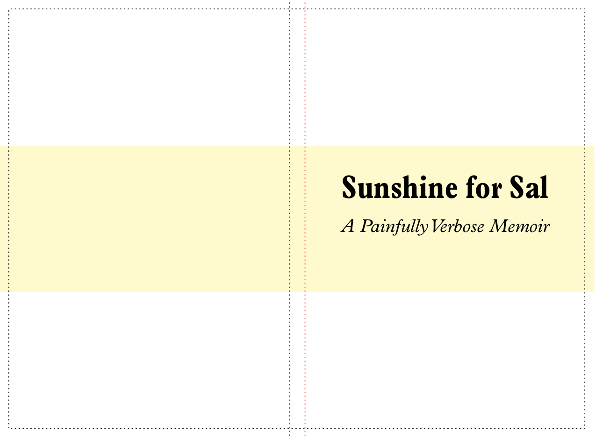

1 Overview
1.1 Installation
The bookcover library works on Linux, Mac OS, and Windows. You need a working installation of Racket first.
To install bookcover from the command line:
raco pkg install bookcover
To install from DrRacket, click File|Install Package .... Type bookcover in the text box, then click Install. When it’s finished, close and relaunch DrRacket.
1.2 Quick start
The most basic way to use bookcover is as a single-file Racket program, which takes information about a single book and generates a single book cover for it.
Here’s an example book cover program:
"example-cover.rkt"
#lang bookcover (setup #:interior-pdf "my-book.pdf" #:cover-pdf "example-cover.pdf") (define title (text "Sunshine for Sal" "Plantin Std, Semibold" 42)) (define subtitle (text "A Painfully Verbose Memoir" '(italic . "Plantin Std") 24)) (define accent (filled-rectangle (coverwidth) (/ (pageheight) 3) #:color "LemonChiffon" #:draw-border? #f)) (cover-draw accent 0 (/ (pageheight) 3)) (frontcover-draw title #:top (* (pageheight) 2/6) #:horiz-center? #t) (frontcover-draw subtitle #:top (* (pageheight) 3/6) #:horiz-center? #t) (outline-spine! "red") (outline-bleed!)
To try this out for yourself, save this program as "example-cover.rkt" in the same folder as a PDF file "my-book.pdf" (as seen in the call to setup above). If you don’t have such a file, add this line of code immediately before the line with setup on it:
(dummy-pdf "my-book.pdf" (inches->pts 4) (inches->pts 6) #:pages 100)
So when "my-book.pdf" has 100 pages which are 4 inches wide by 6 inches tall, running this program produces a file "example-cover.pdf" that looks like this (shown at reduced scale):

As you may have noticed from the code in this example program, this cover uses Plantin as its typeface. If you don’t have the Plantin fonts installed on your computer, the fonts on the cover you generate will look different. But you get the idea.
Note the anatomy of the book cover: it’s a single image that “wraps” around the entire book, starting with the back cover on the far left, then the spine, then the front cover.
This is a dynamically sized cover. If you were to change the page count of "my-book.pdf" from 100 to 50 and re-run this program, you’d see the width of the spine (the area inside the red lines) automatically shrink to half of its original width. If you were to change the page size to 5 inches by 8 inches, and re-run the program, cover’s width and height would grow to match.
1.3 Anatomy of a book cover program
Let’s look at this example program in more detail.
The very first line is #lang bookcover, which provides all the functions from bookcover/draw (as well as pict and racket/draw) and ensures that the cover PDF is properly closed and saved at the end of your program.
The call to setup is important: until you do it, you can’t actually draw anything. You will call it at least once in your book cover program, and you must give it at least two things: the filename of an existing PDF that will be used as the book’s interior, and the filename to use when saving the cover PDF. The size and number of pages in the interior PDF will directly determine the dimensions of your cover.
In the next three define statements, the program creates some picts that will later be drawn onto the cover. Again, everything in the pict module is available to you automatically. Note the use of no-argument Measurement functions like pageheight that let you easily base the size and/or placement of these picts on the overall dimensions of the cover. That way, if your book’s interior size or page-count change, not only will your cover’s overall dimensions resize appropriately, but the elements on it can adjust their size and placement as well. (Web developers will recognize this practice as “responsive design”.)
Finally, the program uses Drawing functions to draw these picts onto the cover, again using measurement functions to derive coordinates. Two of these functions, outline-spine! and outline-bleed! simply draw dashed lines around their respective special areas; they are useful for reference during the design phase, but you will want to remove them or comment them out before generating your final cover.
This might seem obvious, but note that the order in which you draw things is important: wherever two elements overlap, the first one will be covered up by the second one.